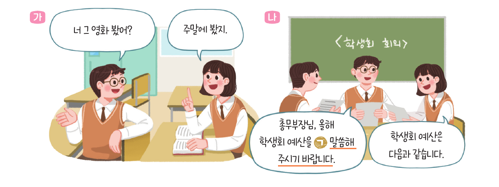

도입 · 상황 안내 (1분)
23:40 · 수능 출제 본부
갑자기 정전이 됐다. 붉은 비상등만 켜진 복도.
보안 시스템이 다시 켜지는 자정 10분이 되면,
본부는 시험이 끝날 때까지 봉인된다.
여러분은 남아 있는 마지막 검토위원.
먼저 사라진 검토위원의 책상에서 쪽지가 나왔다.
“문장을 끝까지 쪼개 봐. 높임이 누구를 향하는지… 그것만이 문을 연다.”
본부
비상구
화법과 언어 · 3. 문장과 담화, 국어의 변화
높임 표현 × 문장의 짜임 · 3차시
자정이 지나면, 이곳은 봉인된다.
도입 · 팀 편성 (2분)
단말기 담당 1명
태블릿을 조작해요.
팀이 합의한 답만 누르기!
검토위원 모두
빨간 카드를 나눠 풀고
근거를 말로 설명해요.
검토 일지 각자
카드마다 고른 답과
근거를 적어요.
팀원 모두가 동의해야 장치에 숫자를 넣는다!
도입 · 교과서 107쪽으로 점검 (2분)

언어 표현
실현 방법
단계
가 봤어
종결 어미 ‘-어’
해체
가 봤지
종결 어미 ‘-지’
해체
나 바랍니다
종결 어미 ‘-ㅂ니다’
하십시오체
나 같습니다
종결 어미 ‘-습니다’
하십시오체
상대 높임은 주로 종결 어미로 실현된다 → 문장 끝을 보면 등급이 보여요!
도입 · 교과서 107쪽으로 점검 (2분)
의문문
말씀해 주시겠습니까?
상대에게 선택의 여지 → 간접적이고 부드럽게
명령문
말씀해 주십시오.
행동을 바로 요구 → 직접적이고 강하게
1차시 기억나요? “창문 좀 열어 줄 수 있니?” → 형식은 의문문, 기능은 요청!
도입 · 상황 안내 (1분)
23:40 · 수능 출제 본부
갑자기 정전이 됐다. 붉은 비상등만 켜진 복도.
보안 시스템이 다시 켜지는 자정 10분이 되면,
본부는 시험이 끝날 때까지 봉인된다.
여러분은 남아 있는 마지막 검토위원.
먼저 사라진 검토위원의 책상에서 쪽지가 나왔다.
“문장을 끝까지 쪼개 봐. 높임이 누구를 향하는지… 그것만이 문을 연다.”
도입 · 규칙 안내 (1분)
빨간 카드
필수 문제 · 방마다 2장
풀면 숫자가 나와요
노란 카드
보너스 · 방마다 1장
맞히면 −30초
파란 카드
단서 · 읽기만 해요
막히면 먼저 보기
초록 카드
장치 · 숫자를 넣으면
열쇠가 나와요
틀리면 경보 +30초
힌트 +1분
제한 시간 30분
[ ]는 안긴문장 표시 · 고른 답과 근거는 검토 일지에 · 팀원 모두 동의한 뒤 장치 입력
전개 · 접속
① 태블릿으로 QR을 찍거나 주소를 입력한다
zet18034.github.io/zet18034/
honorific-lesson-3/escape/
② 팀 번호를 고른다
③ ‘손전등을 켠다’는 선생님 신호에 맞춰 누른다
● 본부 봉인까지
30:00
손전등을 켜라!
방탈출 · 30분 · 먼저 탈출한 팀은 노란 보너스 카드에 도전
일시정지 · 공통 오류 짚기 (필요할 때)
하는 사람 ✕
삼촌이 할아버지를 모시고 왔다
→ 삼촌을 높인다?
받는 사람 ○
할아버지를 모시다
→ 목적어·부사어의 대상을 높여요
‘을/를’, ‘께’가 붙은 사람을 찾으세요 · 모시다 · 드리다 · 뵙다 · 여쭙다
정리 · 기록 확인 및 시상 (3분)
🏆 최단 탈출
○팀
○○:○○
경보 최소
○팀
보너스 왕
○팀
최종 기록 = 걸린 시간 + 경보·힌트 벌점 − 보너스 (탈출 화면의 기록 카드로 확인)
정리 · 경보가 많이 울린 문장 ① (출제실)
삼촌은 [동생이 타 준] 커피를 단숨에 마셨다.
함정
마- + -시- + -었- ✕
바른 분석
마시- + -었- + -다 ○
‘시’가 어간의 일부: 마시다 · 다시다(2026 수능 37번 ⑤) · 모시다 → 주체 높임이 아니에요
정리 · 경보가 많이 울린 문장 ② (검토실)
언니는 [내가 어제 찾아뵌] 은사님을 오늘 우연히 만났다.
안긴문장: 객체 높임(찾아뵙다) → 대상 은사님 → 바깥에서 ‘은사님을’ = 목적어
나는 [감기에 걸리신] 어머니께 따뜻한 차를 드렸다.
안긴문장: 주체 높임(걸리시다) → 대상 어머니 → 바깥에서 ‘어머니께’ = 부사어
높임의 종류(주체/객체)와 문장 성분(주어/목적어/부사어)을 따로 따지기 → 2022학년도 9월 모평 38번
정리 · 경보가 많이 울린 문장 ③ (수발실 · 식당)
간접 높임 ○
할아버지께서는 [손이 유난히 크시다].
서술절의 주어 ‘손’ = 할아버지의 신체
걱정이 있으시다 ○ / 걱정이 계시다 ✕
사물 높임 ✕
[고객님께서 주문하신] 상품은 내일 도착하실 예정입니다.
주문하신 → 관형절 주어 고객 ○
도착하실 → 주어 상품 ✕ → 도착할
‘-시-’가 붙은 서술어의 주어부터 찾고, 그 주어가 사람과 밀접한 것인지 따지기
정리 · 화자의 태도 (2분)
문장 종결 표현
평서·의문·명령·청유·감탄
형식과 실제 의도는 다를 수 있어요
높임 표현
주체 · 객체 · 상대
안긴문장 안과 밖에서 따로!
담화 맥락
누구에게, 어떤 자리에서?
→ 골라 쓴 표현에
화자의 태도가 드러나요
[12화언01-05] 담화의 맥락에 적절한 어휘와 문법 요소를 선택하여 화자의 태도를 드러낸다.
정리 · 출구 카드 (2분)
하나
오늘 가장 헷갈렸던
문장과 그 까닭
둘
누구에게, 어떤 자리에서
말하느냐에 따라 높임이
달라진 예 하나
검토 일지 맨 아래를 잘라 내고 나가기 ✂
담화의 맥락
응집성
다음 시간 예고
탈출하느라 수고 많았어요!